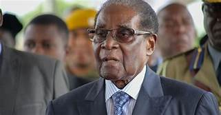

Robert Gabriel Mugabe
Freedom fighter for African Liberation

the leader of zimbabwe since its independence in 1980
here is a time line of Robert Mugabe
- 1924 Robert Mugabe was born in Katuma
- 1945 - mugabe graduated from katuma's st. Francis Xavier college
- 1946 to 1960 - taught in rhodesia and ghana,and pursued further education at fort hare university in south africa
- 1960 - mugabe joined the pro-independence National Democratic party,
- 1961 - the national democratic was banned and reformed as the zimbabwe african people union(ZAPU)
- 2019 - died at the age of 95
if you have time you can read more of Robert mugabe on Wikipedea